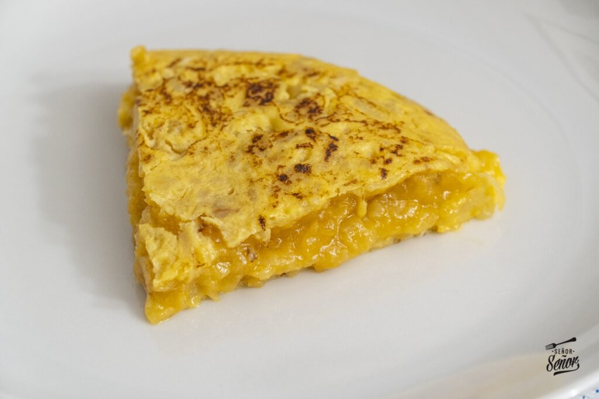

Tortilla de Patatas

Tortilla de patatas, also known as Spanish omelette, is a traditional
Spanish dish made with eggs, potatoes and onions. It is often served as a
tapa or a main course.
Ingredients
- 3 large potatoes
- 6 large eggs
- 1 large onion
- olive oil
- salt
Instructions
- Peel and slice the potatoes into thin pieces.
- Chop the onion into thin slices.
-
Heat olive oil in a pan and cook the potatoes until they are tender.
- Add the onion and cook for a few more minutes.
- Beat the eggs and season with salt.
- Pour the egg mixture over the potatoes and onions.
- Cook on low heat until the edges are set.
- Flip the tortilla and cook for a few more minutes.
Back to Home